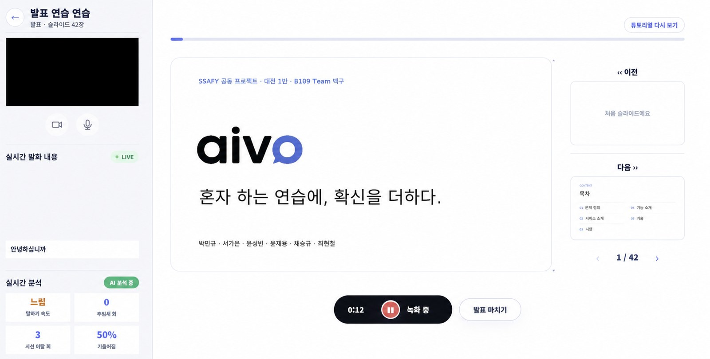
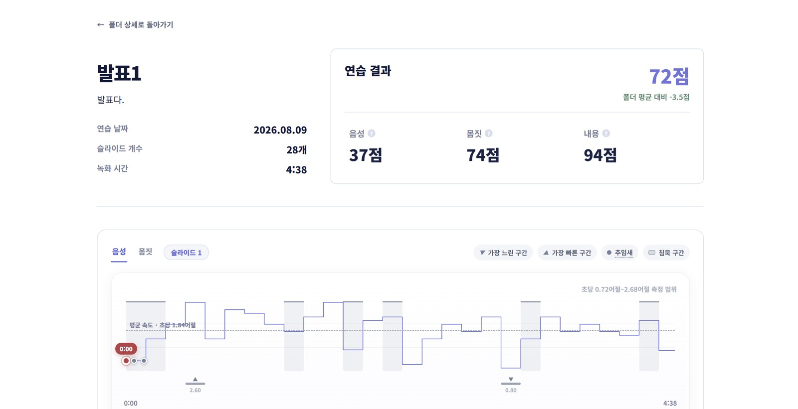
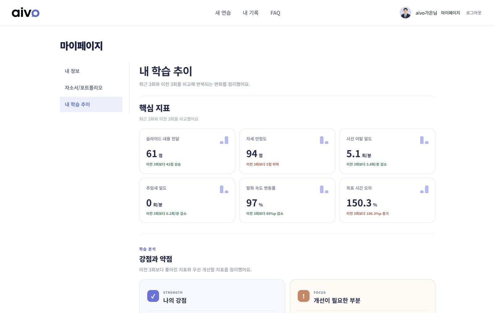

01
멀쩡해 보이는 화면을 의심하기
서버가 실패해도 가짜 데이터가 정상 화면을 그려서, 연결이 됐는지 알 수 없었어요. 자동 대체를 끄고 실제 응답과 명세를 하나씩 대조했어요.
발표와 면접 연습을 촬영하면, 고칠 순간을 영상과 리포트로 다시 보여 주는 AI 말하기 코치.

면접과 폴더, 리포트 화면을 Vue로 만들었어요. 게임은 아니지만, 사람이 보는 화면과 그 뒤의 데이터를 함께 다룬 경험이에요.
Vue 3, Pinia, Figma


서버가 실패해도 가짜 데이터가 정상 화면을 그려서, 연결이 됐는지 알 수 없었어요. 자동 대체를 끄고 실제 응답과 명세를 하나씩 대조했어요.

리포트 위의 합계와 질문별 합계가 서로 달랐어요. 같은 기준으로 맞추고, 이어지는 값은 선으로, 사건은 점으로 나눠 그렸어요.